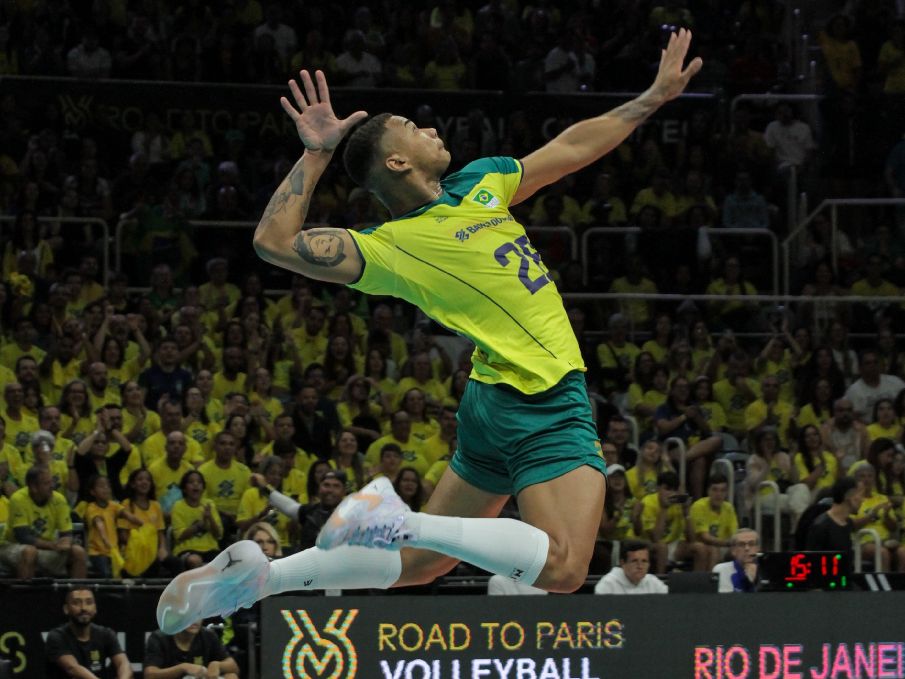
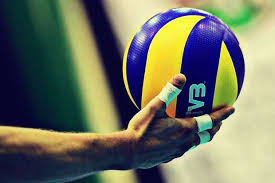
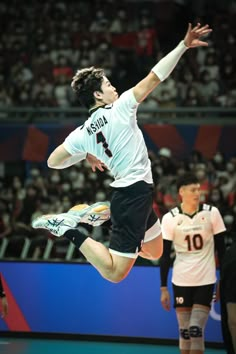

O jogador de vôlei profissional é o atleta dedicado a representar clubes e seleções em competições de alto rendimento. Ele combina preparo físico, técnica apurada, tática e trabalho em equipe para alcançar a máxima performance dentro das quadras.

Nesta página você vai conhecer o que um jogador de vôlei faz no dia a dia e como ele atua em diferentes aspectos do esporte, desde a rotina intensa de treinos até a preparação mental e estratégica para as grandes partidas.

• Executa fundamentos técnicos com precisão (saque, manchete, toque, ataque e bloqueio).
• Desenvolve rotinas de preparação física, força e prevenção de lesões na academia.
• Estuda táticas de jogo e analisa os adversários para otimizar o posicionamento em quadra.

Em resumo, o jogador de vôlei profissional transforma dedicação diária em espetáculo esportivo, superando limites físicos e mentais para conquistar títulos e inspirar torcedores por meio do esporte.
prosseguir